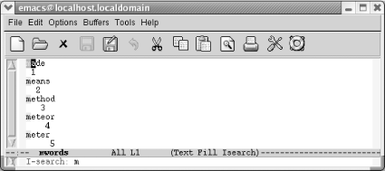
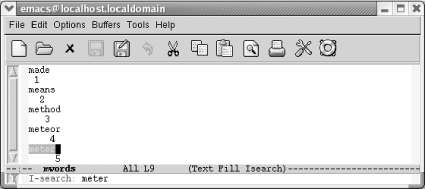

{% include JB/setup %}
{% raw %}
<div>
<div class="calibre24"></div><div class="book" xml:lang="en"><div class="book"><div class="book"><div class="book"><div class="calibre24"></div><h1 class="title"><a id="gnu3-CHP-3" class="calibre1"></a>Chapter 3. Search and Replace</h1></div></div></div><p class="copyright">The commands we discussed in the first two chapters are enough to get
you started, but they're certainly not enough to do
any serious editing. If you're using Emacs for
anything longer than a few paragraphs, you'll want
the support this chapter describes. In this chapter, we cover the
various ways that Emacs lets you search for and replace text. Emacs
provides the traditional search and replace facilities you would
expect in any editor; it also provides several important variants,
including incremental searches, regular expression searches, and
query-replace. We also cover spell-checking here, because it is a
type of replacement (errors are sought and replaced with
corrections). Finally, we cover word abbreviation mode; this feature
is a type of automatic replacement that can be a real timesaver.</p><div class="book" xml:lang="en"><div class="book"><div class="book"><div class="book"><h1 class="title"><a id="gnu3-CHP-3-SECT-1" class="calibre1"></a>Different Kinds of Searches</h1></div></div></div><p class="copyright">While you're editing, you frequently want to find
something you've already typed. Rather than hunt
through the file trying to find what you're looking
for, virtually all editors provide some kind of search feature that
lets you look for a particular text string. Emacs is no exception to
the rule. It supplies a search command—in fact, it provides a
dizzying array of search commands. Here's a quick
summary of the different kinds of searches that are available:</p><div class="book"><dl class="copyright"><dt class="book"><span>
                  <span><em class="calibre7">Simple search</em></span>
               </span></dt><dd class="calibre20"><p class="copyright">You give Emacs a search string, <a id="gnu3-CHP-3-ITERM-1852" class="calibre2"></a>
                     <a id="gnu3-CHP-3-ITERM-1853" class="calibre2"></a>and it finds the next occurrence. You
will find this search in almost any editor.</p></dd><dt class="book"><span>
                  <span><em class="calibre7">Incremental search</em></span>
               </span></dt><dd class="calibre20"><p class="copyright">With incremental search, Emacs <a id="gnu3-CHP-3-ITERM-1854" class="calibre2"></a>
                     <a id="gnu3-CHP-3-ITERM-1855" class="calibre2"></a>starts to search the file as soon as
you type the first character of a search string. It continues to
search as you type more characters.</p></dd><dt class="book"><span>
                  <span><em class="calibre7">Word search</em></span>
               </span></dt><dd class="calibre20"><p class="copyright">A word search is like a simple search, <a id="gnu3-CHP-3-ITERM-1856" class="calibre2"></a>
                     <a id="gnu3-CHP-3-ITERM-1857" class="calibre2"></a>except that Emacs searches only for
full words and phrases. For example, if you are searching for the
word <span><em class="calibre7">hat</em></span>, you don't have to
worry about finding the word <span><em class="calibre7">that</em></span>. A word search
is also useful when you need to find a phrase that is spread across
two lines.</p></dd><dt class="book"><span>
                  <span><em class="calibre7">Regular expression search</em></span>
               </span></dt><dd class="calibre20"><p class="copyright">To search for patterns, you can <a id="gnu3-CHP-3-ITERM-1858" class="calibre2"></a>
                     <a id="gnu3-CHP-3-ITERM-1859" class="calibre2"></a>use a regular expression
search. For example, if you wanted to find all instances of <span><strong class="calibre5">B1</strong></span> and <span><strong class="calibre5">B2</strong></span>,
you could search for them using the regular expression <span><strong class="calibre5">B[12]</strong></span>. However, regular expressions can be
extremely complex. We'll give a brief introduction
to this topic here; it is discussed more fully in <a class="calibre2" href="ch11.html" title="Chapter 11. Emacs Lisp Programming">Chapter 11</a>.</p></dd><dt class="book"><span>
                  <span><em class="calibre7">Incremental regular expression search</em></span>
               </span></dt><dd class="calibre20"><p class="copyright">This search procedure is a combination <a id="gnu3-CHP-3-ITERM-1860" class="calibre2"></a>
                     <a id="gnu3-CHP-3-ITERM-1861" class="calibre2"></a>of an incremental
search and a regular expression search.</p></dd></dl></div><p class="copyright">You can search forward or <a id="gnu3-CHP-3-ITERM-1862" class="calibre2"></a>
            <a id="gnu3-CHP-3-ITERM-1863" class="calibre2"></a>
            <a id="gnu3-CHP-3-ITERM-1864" class="calibre2"></a>backward. Searches can be either
case-sensitive, meaning that Emacs considers upper- and lowercase
letters to be different (i.e., the words <span><em class="calibre7">This</em></span>
and <span><em class="calibre7">this</em></span> are different) or case-insensitive, in
which upper- and lowercase are not differentiated (i.e.,
<span><em class="calibre7">This</em></span> and <span><em class="calibre7">this</em></span> are
equivalent). By default, searches are case-insensitive, with upper-
and lowercase letters considered to be the same. One exception: if
you type any uppercase letters, Emacs makes the whole search string
case-sensitive; it assumes you are looking for something precise
since you've made the extra effort to type some
letters in uppercase.</p><p class="copyright">Replacement operations are closely related to searches. As with
searches, Emacs offers you several different flavors:</p><div class="book"><dl class="copyright"><dt class="book"><span>
                  <span><em class="calibre7">Simple search and replace</em></span>
               </span></dt><dd class="calibre20"><p class="copyright">In this procedure, Emacs replaces <a id="gnu3-CHP-3-ITERM-1865" class="calibre2"></a>
                     <a id="gnu3-CHP-3-ITERM-1866" class="calibre2"></a>all occurrences of one string with
another. Usually, this is too radical a solution and can have
unintended results. Try query-replace instead.</p></dd><dt class="book"><span>
                  <span><em class="calibre7">Query-replace</em></span>
               </span></dt><dd class="calibre20"><p class="copyright">With query-replace, Emacs <a id="gnu3-CHP-3-ITERM-1867" class="calibre2"></a>
                     <a id="gnu3-CHP-3-ITERM-1868" class="calibre2"></a>conditionally
replaces a string throughout a file. Emacs finds all occurrences of
the search string, and for each one it asks you whether or not to
perform the replacement. This type of replacement is useful if you
need to change some, but not all, instances of a word or phrase
throughout a file.</p></dd><dt class="book"><span>
                  <span><em class="calibre7">Regular expression replace</em></span>
               </span></dt><dd class="calibre20"><p class="copyright">Regular expression replacement <a id="gnu3-CHP-3-ITERM-1869" class="calibre2"></a>
                     <a id="gnu3-CHP-3-ITERM-1870" class="calibre2"></a>uses the powerful pattern matching
facility of the same name to find strings and replace them.</p></dd></dl></div><p class="copyright">So now you know what you'll be looking at.
Don't be intimidated by the wealth of searches that
are available. In practice, you'll probably settle
on one search command and one replace command and use these for 99
percent of your work. For example, we use incremental search and
query-replace most of the time. If you're a writer,
you may use word search all the time; if you're a
programmer, you might want a regular expression search. If
you're just beginning, you may want to learn
incremental search and read the rest of this chapter later. However,
if you know what's available,
you'll be able to make use of the other search
commands when they become useful.</p><div class="book" xml:lang="en"><div class="book"><div class="book"><div class="book"><h2 class="title1"><a id="gnu3-CHP-3-SECT-1.1" class="calibre1"></a>Incremental Search</h2></div></div></div><p class="copyright">Incremental search starts <a id="gnu3-CHP-3-ITERM-1871" class="calibre2"></a>
               <a id="gnu3-CHP-3-ITERM-1872" class="calibre2"></a>to work from the moment you type the
first character of the search string. Many users like the efficiency
of incremental searches, and they like the highlighting as well.
Emacs highlights all
<a id="gnu3-CHP-3-ITERM-1873" class="calibre2"></a>
               <a id="gnu3-CHP-3-ITERM-1874" class="calibre2"></a>occurrences
of the search string in aqua blue (if your display supports it) and
uses purple to highlight the string at the cursor position (the
current match).</p><div class="book"><a id="ch03-2-fm2xml" class="calibre2"></a><table class="calibre8"><colgroup class="calibre9"><col class="calibre10"/></colgroup><tbody class="calibre15"><tr class="calibre12"><td class="calibre17">
                           <p class="copyright">Type: <span><strong class="calibre5">C-s m</strong></span>
                           </p>
                        </td></tr><tr class="calibre12"><td class="calibre17">
                           <p class="copyright">
                              </p><div class="book"><div class="mediaobject"><a id="I_3_tt76" class="calibre2"></a></div></div><p class="copyright">
                           </p>
                        </td></tr><tr class="calibre12"><td class="calibre19">
                           <p class="copyright">Emacs highlights all the words that start with m.</p>
                        </td></tr></tbody></table></div><p class="copyright">To start an incremental <a id="gnu3-CHP-3-ITERM-1875" class="calibre2"></a>
               <a id="gnu3-CHP-3-ITERM-1876" class="calibre2"></a>search,
type <span><strong class="calibre5">C-s</strong></span> and then type the text you
want to find. Emacs temporarily enters Isearch mode. Notice how this
search works: Emacs looks for each character as soon as you type it.
For example, if you are searching for the word
<span><em class="calibre7">meter</em></span>, in an incremental search Emacs finds the
next <span><em class="calibre7">m</em></span> as soon as you type the
<span><em class="calibre7">m</em></span>; it finds the next <span><em class="calibre7">me</em></span> as
soon as you type the <span><em class="calibre7">e</em></span>; it finds the
<span><em class="calibre7">met</em></span> as soon as you type the
<span><em class="calibre7">t</em></span>; and so on. Sooner or later, you either find
what you want, or Emacs is unable to find anything. If you find what
you want, press <span><strong class="calibre5">Enter</strong></span>; doing so
stops the search at the current place in the file. If Emacs
can't find anything that matches your search string,
it prints the message <code class="calibre21">Search failed</code> at the bottom
of your screen and then it beeps.</p><p class="copyright">Here's what happens when we search for the word
<span><em class="calibre7">meter</em></span>; the numbers show how the cursor moves
with each new letter in the search string.</p><div class="book"><a id="ch03-3-fm2xml" class="calibre2"></a><table class="calibre8"><colgroup class="calibre9"><col class="calibre10"/></colgroup><tbody class="calibre15"><tr class="calibre12"><td class="calibre17">
                           <p class="copyright">Type: <span><strong class="calibre5">C-s meter</strong></span>
                           </p>
                        </td></tr><tr class="calibre12"><td class="calibre17">
                           <p class="copyright">
                              </p><div class="book"><div class="mediaobject"><a id="I_3_tt77" class="calibre2"></a></div></div><p class="copyright">
                           </p>
                        </td></tr><tr class="calibre12"><td class="calibre19">
                           <p class="copyright">Emacs moves the cursor from one position to another as you type the
letters of the search string.</p>
                        </td></tr></tbody></table></div><p class="copyright">In this incremental search, Emacs moves the cursor from position 1 to
2, to 3, and so on, as you type the search string
<span><em class="calibre7">meter</em></span>. Also, note that
<code class="calibre21">Isearch</code> appears on the mode line.</p><p class="copyright">What happens if you find the string you're looking
for but not the right occurrence of the string?
Let's say you're searching for the
word <span><em class="calibre7">eschatology</em></span> and you find the word, but
you're still not in the right place. Simply press
<span><strong class="calibre5">C-s</strong></span> again to find the next
occurrence of the current search string. Emacs uses the same search
string; you don't have to retype it.</p><p class="copyright">Remember to press <span><strong class="calibre5">Enter</strong></span> when
you've found the text you want. Forgetting to stop
the search (by pressing <span><strong class="calibre5">Enter</strong></span> or
with any other cursor movement command) is a common mistake: you type
a few things, and suddenly Emacs is off looking at some completely
different part of the file. What has happened? Emacs thinks
you're still searching, and it has just added the
characters you've typed to the search string.</p><p class="copyright">If you type a letter in your search string incorrectly, press
<span><strong class="calibre5">Del</strong></span>: Emacs moves back to the first
instance of the reduced string in the file. If you keep pressing
<span><strong class="calibre5">Del</strong></span> to delete characters from the
search string, you'll see Emacs cycle back through
the file to previous matches.</p><p class="copyright">To cancel a <a id="gnu3-CHP-3-ITERM-1877" class="calibre2"></a>
               <a id="gnu3-CHP-3-ITERM-1878" class="calibre2"></a>search (that is, to give up searching),
type <span><strong class="calibre5">C-g</strong></span>. This command brings you
back to the place where the search began.</p><p class="copyright">To search backward <a id="gnu3-CHP-3-ITERM-1879" class="calibre2"></a>through a file, use <span><strong class="calibre5">C-r</strong></span>, which works exactly like <span><strong class="calibre5">C-s</strong></span> except that it searches in the opposite
direction. It puts the cursor at the beginning of the text you find.
Just as you can do when repeating <span><strong class="calibre5">C-s</strong></span>, you can press <span><strong class="calibre5">C-r</strong></span> to make the search go in the other
direction without retyping the search string.</p><p class="copyright">To avoid typing your search string, you can copy text from the buffer
into the search string. To copy text from <a id="gnu3-CHP-3-ITERM-1880" class="calibre2"></a>
               <a id="gnu3-CHP-3-ITERM-1881" class="calibre2"></a>the cursor position through the next
space or punctuation mark into the search string, type <span><strong class="calibre5">C-s C-w</strong></span> (it may help to think of <span><strong class="calibre5">C-s C-w</strong></span> as
"<span><em class="calibre7">search</em></span> a
<span><em class="calibre7">word</em></span>"). To copy text from the
cursor to the end of the line into the search string, type <span><strong class="calibre5">C-s C-y</strong></span>. Notice that the text that is yanked
is always converted to lowercase; this conversion ensures that the
search will be case-insensitive. You can also copy text from the kill
ring to the search string by typing <span><strong class="calibre5">C-s
M-y</strong></span>. After you've given this command, you
can press <span><strong class="calibre5">M-p</strong></span> to see previous items
from the kill ring. <span><strong class="calibre5">M-n</strong></span> takes you to
the next item if you've gone back with <span><strong class="calibre5">M-p</strong></span>.</p><p class="copyright">Once you're in an incremental search, certain keys
(such as <span><strong class="calibre5">Enter</strong></span> and <span><strong class="calibre5">Del</strong></span>) have different functions than they
normally do. This situation may sound confusing, but
it's actually fairly easy to get
<a id="gnu3-CHP-3-ITERM-1882" class="calibre2"></a>
               <a id="gnu3-CHP-3-ITERM-1883" class="calibre2"></a>
               <a id="gnu3-CHP-3-ITERM-1884" class="calibre2"></a>used to. <a class="calibre2" href="ch03.html#gnu3-CHP-3-TABLE-1" title="Table 3-1. Incremental search commands">Table 3-1</a>
shows a summary of key functions during incremental search.</p><div class="book"><a id="gnu3-CHP-3-TABLE-1" class="calibre2"></a><p class="title2"><b class="calibre25">Table 3-1. Incremental search commands</b></p><div class="table-contents"><table summary="Incremental search commands" class="calibre8"><colgroup class="calibre9"><col class="calibre10"/><col class="calibre10"/><col class="calibre10"/></colgroup><thead class="calibre11"><tr class="calibre12"><th class="calibre26">
                           <p class="copyright">Keystrokes</p>
                        </th><th class="calibre26">
                           <p class="copyright">Command name</p>
                        </th><th class="calibre27">
                           <p class="copyright">Action</p>
                        </th></tr></thead><tbody class="calibre15"><tr class="calibre12"><td class="calibre28">
                           <p class="copyright">
                              <span><strong class="calibre5">C-s</strong></span>
                              <span><em class="calibre7">Edit</em></span>
                              <span>→</span> 
                              <span><em class="calibre7">Search</em></span> 
                              <span>→</span>
                              <span><em class="calibre7">Incremental Search</em></span> 
                              <span>→</span> 
                              <span><em class="calibre7">Forward
String</em></span>
                           </p>
                        </td><td class="calibre28">
                           <p class="copyright">
                              <span><strong class="calibre5">isearch-forward</strong></span>
                           </p>
                        </td><td class="calibre29">
                           <p class="copyright">Start incremental search forward; follow by search string. Also, find
next occurrence (forward) of search string.</p>
                        </td></tr><tr class="calibre12"><td class="calibre28">
                           <p class="copyright">
                              <span><strong class="calibre5">C-r</strong></span>
                              <span><em class="calibre7">Edit</em></span>
                              <span>→</span> 
                              <span><em class="calibre7">Search</em></span> 
                              <span>→</span>
                              <span><em class="calibre7">Incremental Search</em></span> 
                              <span>→</span> 
                              <span><em class="calibre7">Backward
String</em></span>
                           </p>
                        </td><td class="calibre28">
                           <p class="copyright">
                              <span><strong class="calibre5">isearch-backward</strong></span>
                           </p>
                        </td><td class="calibre29">
                           <p class="copyright">Start incremental search backward; follow by search string. Also,
find next occurrence (backward) of search string.</p>
                        </td></tr><tr class="calibre12"><td class="calibre28">
                           <p class="copyright">
                              <span><strong class="calibre5">Enter</strong></span>
                           </p>
                        </td><td class="calibre28">
                           <p class="copyright">
                              <span><strong class="calibre5">isearch-exit</strong></span>
                           </p>
                        </td><td class="calibre29">
                           <p class="copyright">In an incremental search , exit the search.</p>
                        </td></tr><tr class="calibre12"><td class="calibre28">
                           <p class="copyright">
                              <span><strong class="calibre5">C-g</strong></span>
                           </p>
                        </td><td class="calibre28">
                           <p class="copyright">
                              <span><strong class="calibre5">keyboard-quit</strong></span>
                           </p>
                        </td><td class="calibre29">
                           <p class="copyright">In an incremental search , cancel the search.</p>
                        </td></tr><tr class="calibre12"><td class="calibre28">
                           <p class="copyright">
                              <span><strong class="calibre5">Del</strong></span>
                           </p>
                        </td><td class="calibre28">
                           <p class="copyright">
                              <span><strong class="calibre5">isearch-delete-char</strong></span>
                           </p>
                        </td><td class="calibre29">
                           <p class="copyright">In an incremental search, delete character from search string.</p>
                        </td></tr><tr class="calibre12"><td class="calibre28">
                           <p class="copyright">
                              <span><strong class="calibre5">C-s C-w</strong></span>
                           </p>
                        </td><td class="calibre28">
                           <p class="copyright">
                              <span><strong class="calibre5">isearch-yank-word</strong></span>
                           </p>
                        </td><td class="calibre29">
                           <p class="copyright">Start an incremental search with the word the cursor is on as the
search string.</p>
                        </td></tr><tr class="calibre12"><td class="calibre28">
                           <p class="copyright">
                              <span><strong class="calibre5">C-s C-y</strong></span>
                           </p>
                        </td><td class="calibre28">
                           <p class="copyright">
                              <span><strong class="calibre5">isearch-yank-line</strong></span>
                           </p>
                        </td><td class="calibre29">
                           <p class="copyright">Start an incremental search with the text from the cursor position to
the end of the line as the search string.</p>
                        </td></tr><tr class="calibre12"><td class="calibre28">
                           <p class="copyright">
                              <span><strong class="calibre5">C-s M-y</strong></span>
                           </p>
                        </td><td class="calibre28">
                           <p class="copyright">
                              <span><strong class="calibre5">isearch-yank-kill</strong></span>
                           </p>
                        </td><td class="calibre29">
                           <p class="copyright">Start an incremental search with text from the kill ring as the
search string.</p>
                        </td></tr><tr class="calibre12"><td class="calibre28">
                           <p class="copyright">
                              <span><strong class="calibre5">C-s C-s</strong></span>
                           </p>
                        </td><td class="calibre28">
                           <p class="copyright">
                              <span><strong class="calibre5">isearch-repeat-forward</strong></span>
                           </p>
                        </td><td class="calibre29">
                           <p class="copyright">Repeat previous search.</p>
                        </td></tr><tr class="calibre12"><td class="calibre30">
                           <p class="copyright">C-r C-r</p>
                        </td><td class="calibre30">
                           <p class="copyright">
                              <span><strong class="calibre5">isearch-repeat-backward</strong></span>
                           </p>
                        </td><td class="calibre31">
                           <p class="copyright">Repeat previous search backward.</p>
                        </td></tr></tbody></table></div></div><br class="book"/></div><div class="book" xml:lang="en"><div class="book"><div class="book"><div class="book"><h2 class="title1"><a id="gnu3-CHP-3-SECT-1.2" class="calibre1"></a>Simple Searches</h2></div></div></div><p class="copyright">Emacs also offers a simple, or <a id="gnu3-CHP-3-ITERM-1885" class="calibre2"></a>
               <a id="gnu3-CHP-3-ITERM-1886" class="calibre2"></a>nonincremental, search. To use a more
straightforward search, type <span><strong class="calibre5">C-s
Enter</strong></span>. Type the search string, press <span><strong class="calibre5">Enter</strong></span>, and Emacs begins the search. Simply
press <span><strong class="calibre5">C-s</strong></span> again to repeat the
search. To start a nonincremental search backwards through the file,
press <span><strong class="calibre5">C-r Enter</strong></span>. Again, you type the
search string and press <span><strong class="calibre5">Enter</strong></span> to
begin the search.</p><p class="copyright">The search icon on the
<a id="gnu3-CHP-3-ITERM-1887" class="calibre2"></a>
               <a id="gnu3-CHP-3-ITERM-1888" class="calibre2"></a>toolbar (a magnifying glass over paper)
and the Edit<span>→</span> Search<span>→</span> String Forward option run the
same kind of a search. The prompt is slightly different. <span><strong class="calibre5">C-s Enter</strong></span> prompts you with
<code class="calibre21">Search</code>: in the minibuffer while the toolbar icon
and the menu option prompt with <code class="calibre21">Search for
string</code>:. This is a minor difference; the searches are
virtually identical otherwise.</p><p class="copyright">
               <a class="calibre2" href="ch03.html#gnu3-CHP-3-TABLE-2" title="Table 3-2. Simple search commands">Table 3-2</a> summarizes the simple
<a id="gnu3-CHP-3-ITERM-1889" class="calibre2"></a>
               <a id="gnu3-CHP-3-ITERM-1890" class="calibre2"></a>
               <a id="gnu3-CHP-3-ITERM-1891" class="calibre2"></a>search commands.</p><div class="book"><a id="gnu3-CHP-3-TABLE-2" class="calibre2"></a><p class="title2"><b class="calibre25">Table 3-2. Simple search commands</b></p><div class="table-contents"><table summary="Simple search commands" class="calibre8"><colgroup class="calibre9"><col class="calibre10"/><col class="calibre10"/></colgroup><thead class="calibre11"><tr class="calibre12"><th class="calibre26">
                           <p class="copyright">Keystrokes</p>
                        </th><th class="calibre27">
                           <p class="copyright">Action</p>
                        </th></tr></thead><tbody class="calibre15"><tr class="calibre12"><td class="calibre28">
                           <p class="copyright">
                              <span><strong class="calibre5">C-s Enter</strong></span>
                              <em class="calibre7"><code class="calibre21">searchstring</code></em> 
                              <span><strong class="calibre5">Enter</strong></span>
                              <span><em class="calibre7">Edit</em></span> 
                              <span>→</span>
                              <span><em class="calibre7">Search</em></span> 
                              <span>→</span> 
                              <span><em class="calibre7">String
Forward</em></span>
                           </p>
                        </td><td class="calibre29">
                           <p class="copyright">Start nonincremental search forward.</p>
                        </td></tr><tr class="calibre12"><td class="calibre28">
                           <p class="copyright">
                              <span><strong class="calibre5">C-s</strong></span>
                           </p>
                        </td><td class="calibre29">
                           <p class="copyright">Repeat search forward.</p>
                        </td></tr><tr class="calibre12"><td class="calibre28">
                           <p class="copyright">
                              <span><strong class="calibre5">C-r Enter</strong></span>
                              <em class="calibre7"><code class="calibre21">searchstrin</code></em>
                              <span><em class="calibre7">g</em></span> 
                              <span><strong class="calibre5">Enter</strong></span>
                              <span><em class="calibre7">Edit</em></span> 
                              <span>→</span>
                              <span><em class="calibre7">Search</em></span> 
                              <span>→</span> 
                              <span><em class="calibre7">String
Backwards</em></span>
                           </p>
                        </td><td class="calibre29">
                           <p class="copyright">Start nonincremental search backward.</p>
                        </td></tr><tr class="calibre12"><td class="calibre30">
                           <p class="copyright">
                              <span><strong class="calibre5">C-r</strong></span>
                           </p>
                        </td><td class="calibre31">
                           <p class="copyright">Repeat search backward.</p>
                        </td></tr></tbody></table></div></div><br class="book"/></div><div class="book" xml:lang="en"><div class="book"><div class="book"><div class="book"><h2 class="title1"><a id="gnu3-CHP-3-SECT-1.3" class="calibre1"></a>Word Search</h2></div></div></div><p class="copyright">If you're searching for a phrase and
<a id="gnu3-CHP-3-ITERM-1892" class="calibre2"></a>
               <a id="gnu3-CHP-3-ITERM-1893" class="calibre2"></a>you
know it's in the file but you can't
find it with incremental search, try word search. (You probably
can't find your phrase with incremental search
because the phrase has a line break in it.) Word search is a
nonincremental search that ignores line breaks, spaces, and
punctuation. It also requires that your search string match entire
words in the file.</p><p class="copyright">To do a word search, type <span><strong class="calibre5">C-s Enter
C-w</strong></span> (for <span><strong class="calibre5">word-search-forward</strong></span>). The prompt <code class="calibre21">Word
search</code> appears in the minibuffer. (Don't
be put off by the prompts that appear along the way:
you'll see an <code class="calibre21">I-search</code> prompt
after typing <span><strong class="calibre5">C-s</strong></span> and a
<code class="calibre21">Search</code> prompt after pressing <span><strong class="calibre5">Enter</strong></span>. Ignore these.) Type the search string
and press <span><strong class="calibre5">Enter</strong></span>. Emacs searches for
the given string. To do a word search backwards, type <span><strong class="calibre5">C-r Enter C-w</strong></span> instead. For example, assume
that you have the following text, with the cursor at the beginning:</p><a id="I_3_tt78" class="calibre2"></a><pre class="programlisting">He said, "All good elephants are wise, aren't they?"
She answered, "Some are smarter than others, but we
think this is socially conditioned."</pre><p class="copyright">The command <span><strong class="calibre5">C-s Enter C-w they she
Enter</strong></span> positions the cursor after the word
<span><em class="calibre7">She</em></span>. This command looks complicated, but
it's really nothing more than a word search
(<span><strong class="calibre5">C-s Enter C-w</strong></span>) for the word
<span><em class="calibre7">they</em></span>, followed by the word
<span><em class="calibre7">she</em></span>. It ignores the punctuation
(?") and the newline between
<span><em class="calibre7">they</em></span> and <span><em class="calibre7">she</em></span>.</p><p class="copyright">Assume that you're looking for the word
<span><em class="calibre7">the</em></span>. You don't want to bother
with <span><em class="calibre7">thence</em></span>, <span><em class="calibre7">there</em></span>,
<span><em class="calibre7">theater</em></span>, <span><em class="calibre7">thesis</em></span>,
<span><em class="calibre7">blithe</em></span>, or any other word that happens to
contain the letters <span><em class="calibre7">the</em></span>. In this situation,
neither an incremental search nor a simple search is very
useful—you need a word search. If you're
writing a paper, word search is often exactly what you need. It is
the <span><em class="calibre7">only</em></span> one of the three basic search commands
that allows you to find what you want even if the phrase is split
between two lines.</p><p class="copyright">Now that you've seen the three most commonly used
searches, you might want to experiment and see which you find most
useful.</p></div></div></div></div>

{% endraw %}

